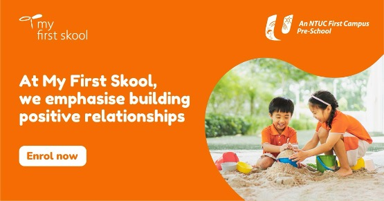
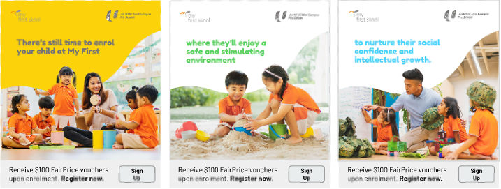

NTUC My First Skool: site, campaign, and 39% more registrations.
A new website and a Singapore-wide integrated campaign launched in lockstep to drive parents to choose My First Skool for their kids' early-years education.
My scope: project owner, key client liaison and copywriter. Led the site rebuild with a multi-discipline team — PMs, front and back-end developers, UX/UI, QA — and the integrated launch campaign across social, programmatic display, and out-of-home.
Earn the choice, then make it easy.
NTUC My First Skool wanted to redevelop their website and launch a Singapore-wide campaign in parallel — driving parents to learn more about, then choose, My First Skool as the place to entrust with their kids' early-years education.
The insight
Parents choosing early-years education aren't researching. They're entrusting. So the site had to feel reassuring and easy to use, and the campaign had to lead with what makes My First Skool's relationship-based approach actually different — not what it teaches, but how it teaches it.
A site and a campaign, in lockstep.
Core messaging surfaced first
The brand promise visible to all users early, with cross-platform reservation and availability surfaced by geography.
Seamless, engaging
Built for parents on the move — desktop one day, mobile the next, with secure flows for every step of the enrolment journey.
Digital and offline, in concert
Social, Google Display, Programmatic Animated, plus offline at scale through Buses and Train panels — every channel rotating around the same relationship-led story.
Relationship over rote
Built around how My First Skool's relationship-based approach helps kids develop the widest range of personal and intellectual skills.
The 60-second hero film — the single story all the other channels rotated around.


A few of the channel variants — the same relationship-led story, tuned per surface.
Site and campaign, in lockstep, on the numbers.
+36% in 4 months
A 36% increase in site traffic across the four-month campaign window.
+39% child registrations
The commercial outcome — the number that matters for the school's growth and the campaign's payback.
Seamless across desktop and mobile
A visually-rich, fully-functional experience that gave parents the secure functionalities they expect when mapping out their children's educational future.